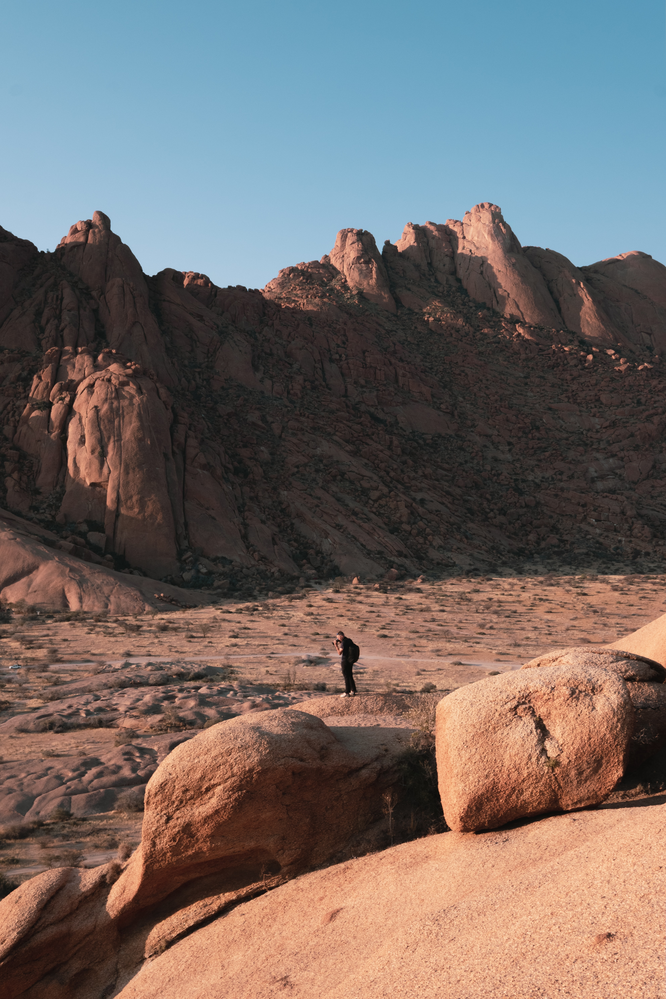

There are so many different purposes and forms of travel. I would like to tell you about one of the most impressive travels in my life. that is a walking tour.
 At that time, I quit my job for a long time and was in despair. Then, at the recommendation of a friend, I went on a walking tour from Seoul to Namwon. I walked a huge distance of 40km every day, but the beautiful sunset of the Han River, the sea of Daecheon, and the autumn colors of jirisan didn’t make me tired. I am a bold person so even on a cold autumn day, I entered the sea of Daecheon or climbed the Jirisan using mountain path instead of a hiking trail. At that time Surely the landowner said there was a way, but he was a liar. The day was going down and we were lost in the mountains It was a huge crisis, but I went down the mountain with Google Maps. Google maps showed all the roads. I was a little afraid but jirisan was a wonderful mountain with the best autumn colors. Not only these experiences, but most importantly, I was able to think a lot and organize myself while walking. Until then, for me, travel was just a fun experience, good food and relaxing. But it was a trip that gave me the strength to rise again. It's a walking tour.